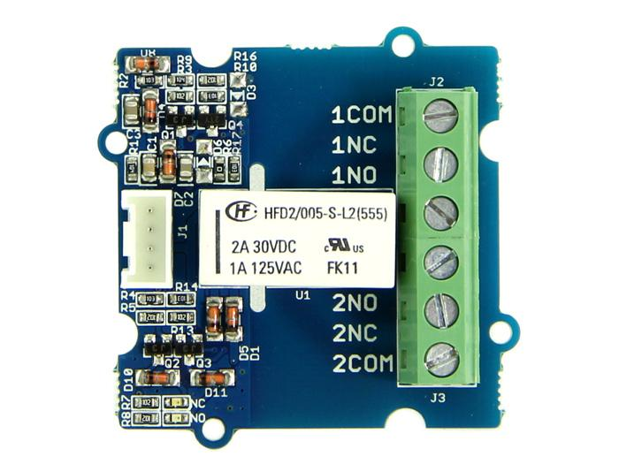
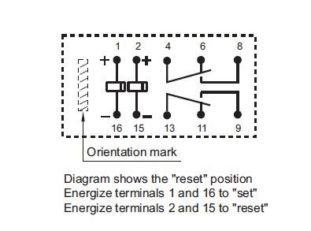

This module is based on 2-Coil Latching Relay. Contrast to the ordinary relay, this latching relay does not need continuous power to keep the state, only a rising/falling pulse is needed to change the work state. Even the power can be removed when the work state do not need to change, making this module especially suitable for low-power projects.
Model: COM05061P

| Item | Min | Typical | Max | Unit |
|---|---|---|---|---|
| Working Voltage | 4.7 | 5.0 | 5.3 | VDC |
| Set/Reset Voltage(Max) | 4.0 | VDC | ||
| Coil Resistance | 151 | 167 | 183 | Ω |
| Switching Voltage(Max) | 35VAC/35VDC | / | ||
| Switching Current(Max) | 3 | A | ||
| Set Time(Latching) | 4.5(max) | ms | ||
| Reset Time(Latching) | 3.5(max) | ms | ||
The latching relay only draws power during the changing of state. A rising/falling voltage pulse on the signal pin changes it's working state. This is very useful in situations where energy efficiency is important, and also in situations where you need the relay to remember its state.
Let's begin to use it.
#define LatchingRelay 3
void setup()
{
pinMode(LatchingRelay,OUTPUT);
digitalWrite(LatchingRelay,LOW);
delay(1000);
digitalWrite(LatchingRelay,HIGH);
delay(1000);
}
void loop()
{
}
#define LatchingRelay 3
void setup()
{
pinMode(LatchingRelay,OUTPUT);
digitalWrite(3,HIGH);
delay(1000);
digitalWrite(3,LOW);
delay(1000);
}
void loop()
{
}
Note:

1.You should have got a raspberry pi and a grovepi or grovepi+.
2.You should have completed configuring the development enviroment, otherwise follow here.
3.Connection
4.Navigate to the demos' directory:
cd yourpath/GrovePi/Software/Python/
nano grove_2_coil_latching_relay.py # "Ctrl+x" to exit #
import time
import grovepi
# Connect the Grove 2-Coil Latching Relay to digital port D4
# SIG,NC,VCC,GND
relay = 4
grovepi.pinMode(relay,"OUTPUT")
while True:
try:
# switch on for 5 seconds
grovepi.digitalWrite(relay,1)
print "on"
time.sleep(5)
# switch off for 5 seconds
grovepi.digitalWrite(relay,0)
print "off"
time.sleep(5)
except KeyboardInterrupt:
grovepi.digitalWrite(relay,0)
break
except IOError:
print "Error"
5.Run the demo.
sudo python grove_2_coil_latching_relay.py
Grove - 2-Coil Latching Relay Eagle File
Latching_Relay_Datesheet
If you have questions or other better design ideas, you can go to our forum or wish to discuss.
Copyright (c) 2008-2016 Seeed Development Limited (www.seeedstudio.com / www.seeed.cc)